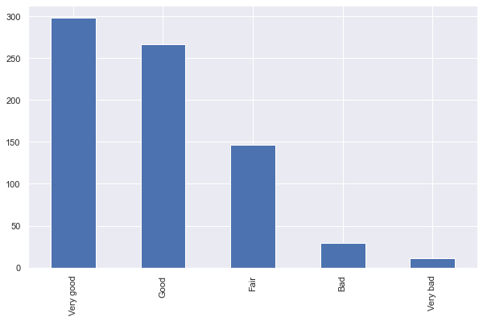

Python/Pandas kan ikke selv gætte sig til, hvad der er kategorisk, da de blot ligner tekst, set fra Pythons synspunkt.
Når man arbejder med kategoriske variable i Python, skal man derfor selv kode dem om til at være kategorisk
Variable kodes til kategoriske med astype('category'). Herunder kodes health om til kategorisk, da det er en kategorisk variabel:
ess2014['health'] = ess2014['health'].astype('category')
Når man kigger på variablen nu ses, at den er ændret til typen category. Derudover vises, hvilke kategorier variablen har.
ess2014['health'].head()
0 Very good
1 Good
2 Good
3 Very good
4 Bad
Name: health, dtype: category
Categories (5, object): ['Bad', 'Fair', 'Good', 'Very bad', 'Very good']
Variable kodes som standard til nominalt skalerede variable. Dette kan ses, ved at kigge på dtypes, hvor ordered angiver, om variablen er kodet nominalt eller ordinalt (ordered = False for nominalt, ordered = True for ordinalt):
ess2014['health'].dtypes
CategoricalDtype(categories=['Bad', 'Fair', 'Good', 'Very bad', 'Very good'], ordered=False)
For at konvertere til ordinal, skal man specificere sig egen type, som kan sættes på variablen.
Indtil videre er der gennemgået forskellige “indbyggede” typer: int, float, string, category. Men det er også muligt at genere sin egen type.
Dette er nødvendigt for at kode en variabel ordinal. Man gør følgende:
CategoricalDtype objektcategories = (sørg for at skrive dem i rækkefølge fra lav til høj, hvis ordinal)ordered = True/FalseHerunder dannes kateogi-objektet, som kan bruges til health. CategoricalDtype skal importeres, før den kan bruges:
from pandas.api.types import CategoricalDtype
health_cat = CategoricalDtype(categories = ['Very bad', 'Bad', 'Fair', 'Good', 'Very good'], ordered = True)
Kategoriobjektet er nu dannet, men er ikke tilknyttet variablen:
health_cat
CategoricalDtype(categories=['Very bad', 'Bad', 'Fair', 'Good', 'Very good'], ordered=True)
Kategoriobjektet tilknyttes med astype():
ess2014['health'] = ess2014['health'].astype(health_cat)
health er nu kodet som ordinal - læg mærke til hvordan rækkefølge er angivet med <:
ess2014['health'].unique()
['Very good', 'Good', 'Bad', 'Fair', 'Very bad', NaN]
Categories (5, object): ['Very bad' < 'Bad' < 'Fair' < 'Good' < 'Very good']
Tag et kig på variablen alcfreq. Er variablen nominal eller ordinal?
Rekod alcfreq til at være kategorisk. Hvis den er ordinal, så dan et kategoriobjekt, som kan bruges til at kode variablen (tjek værdier i variablen med .unique()
Rekodning til ordinal gøres ikke kun for syns skyld. Når man fortæller Python, at en variabel skal behandles som ordinal, kan man bruge rangordnen, når man arbejder med data.
Fx kan man nu filtrere ESS2014 datasættet efter, hvor mange der har et selvvurderet helbred på Fair eller mindre:
ess2014.loc[ess2014['health'] <= 'Fair', :].head()
| idno | ppltrst | happy | health | cgtsday | alcfreq | height | weight | gndr | yrbrn | height_m | age | height_cat | smoker | ppltrst_num | happy_num | |
|---|---|---|---|---|---|---|---|---|---|---|---|---|---|---|---|---|
| 4 | 925410 | 4 | 8 | Bad | NaN | Several times a week | 156.0 | 60.0 | Female | 1969 | 1.56 | 45 | short | not a smoker | 4.0 | 8.0 |
| 11 | 926725 | 5 | Extremely happy | Fair | NaN | Once a week | 168.0 | 70.0 | Male | 1971 | 1.68 | 43 | medium | not a smoker | 5.0 | 10.0 |
| 12 | 940149 | 5 | 5 | Fair | NaN | Every day | 173.0 | 73.0 | Male | 1956 | 1.73 | 58 | medium | not a smoker | 5.0 | 5.0 |
| 13 | 922276 | 9 | Extremely happy | Bad | NaN | Several times a week | 171.0 | 50.0 | Male | 1952 | 1.71 | 62 | medium | not a smoker | 9.0 | 10.0 |
| 15 | 945903 | 2 | 2 | Fair | NaN | Less than once a month | 158.0 | 65.0 | Female | 1967 | 1.58 | 47 | short | not a smoker | 2.0 | 2.0 |
Kategoriske variable rekodes ligesom tekstvariable med .replace().
Man kan med fordel specificere den dictionary, som skal rekodes efter, først, da man derved har den til rådighed, hvis fx flere variable skal rekodes på samme måde.
I nedenstående dannes en ny alcfreq variabel, der inddeler respondenter efter, om de drikker mindst en gang om ugen, mindre end en gang om ugen eller aldrig. Læg mærke til, hvordan værdier slås sammen på denne måde:
ess2014['alcfreq'].unique()
['Never', 'Several times a week', 'Once a week', 'Every day', 'Less than once a month', 'Once a month', '2-3 times a month', NaN]
Categories (7, object): ['Never' < 'Less than once a month' < 'Once a month' < '2-3 times a month' < 'Once a week' < 'Several times a week' < 'Every day']
alc_recodedict = {'Several times a week': 'Once a week or more', 'Once a week': 'Once a week or more',
'Every day': 'Once a week or more', 'Less than once a month': 'Less than once a week',
'Once a month': 'Less than once a week', '2-3 times a month': 'Less than once a week'}
ess2014['alcfreq_3cat'] = ess2014['alcfreq'].replace(alc_recodedict)
Værdierne er nu ændret i den nye variabel. Bemærk, at typen konverteres tilbage til object. Det er derfor en fordel at rekode værdier inden man konverterer variablen til en kategorisk type.
ess2014['alcfreq_3cat'].unique()
array(['Never', 'Once a week or more', 'Less than once a week', nan],
dtype=object)
ess2014.head()
| idno | ppltrst | happy | health | cgtsday | alcfreq | height | weight | gndr | yrbrn | height_m | age | height_cat | smoker | ppltrst_num | happy_num | |
|---|---|---|---|---|---|---|---|---|---|---|---|---|---|---|---|---|
| 0 | 921490 | 4 | Extremely happy | Very good | NaN | Never | 167.0 | 62.0 | Female | 1965 | 1.67 | 49 | medium | not a smoker | 4.0 | 10.0 |
| 1 | 938348 | Most people can be trusted | 7 | Good | NaN | Several times a week | 168.0 | 70.0 | Female | 1973 | 1.68 | 41 | medium | not a smoker | 10.0 | 7.0 |
| 2 | 939019 | 5 | 8 | Good | 3.0 | Once a week | 182.0 | 90.0 | Male | 1980 | 1.82 | 34 | medium | smoker | 5.0 | 8.0 |
| 3 | 924985 | 8 | 9 | Very good | NaN | Once a week | 188.0 | 85.0 | Male | 1946 | 1.88 | 68 | tall | not a smoker | 8.0 | 9.0 |
| 4 | 925410 | 4 | 8 | Bad | NaN | Several times a week | 156.0 | 60.0 | Female | 1969 | 1.56 | 45 | short | not a smoker | 4.0 | 8.0 |
Forskellige plots kan dannes pba. kategoriske. Få plots kan laves direkte på kategoriske, men skal i stedet laves på optællinger.
.value_counts() tæller værdier op i en variabel:
ess2014['health'].value_counts()
Very good 298
Good 266
Fair 146
Bad 29
Very bad 11
Name: health, dtype: int64
value_counts() kan plottes direkte med fx .plot.bar():
ess2014['health'].value_counts().plot.bar()
<AxesSubplot:>

Dan en varibel, der består af variablen health rekodet til at indeholde kategorierne “Good”, “Fair” og “Bad”.
(valgfri) Rekod variablen til at være ordinal
Dan et cirkelplot af den rekodede variabel med .plot.pie() (husk at brug value_counts())